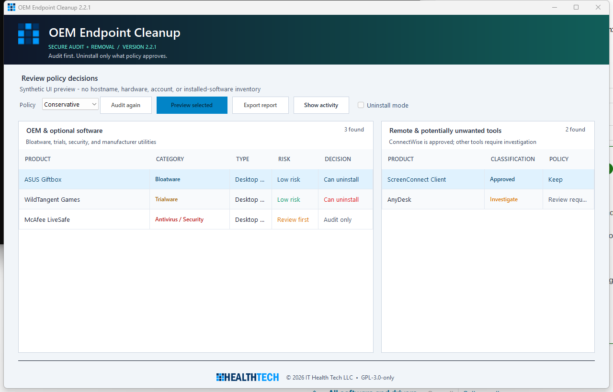

Audit before action
Every run starts as a read-only inventory and writes JSON and HTML reports immediately, before any change is possible.
OEM Endpoint Cleanup 2.2.1
An audit-first Windows utility for MSPs. It inventories OEM bloatware and bundled antivirus trials, scores every match with evidence, evaluates each one against policy, and writes tamper-evident reports — all in dry-run by default.
Every run starts as a read-only inventory and writes JSON and HTML reports immediately, before any change is possible.
Matches carry a 0–100 confidence score and readable rationale. Low-confidence and tied candidates fail closed to manual review.
RMM, remote access, VPN, backup, encryption, drivers, and firmware are protected independently of any blocklist you write.
Hash-chained JSONL audit events and RMM-ingestible JSON give you an evidence trail per device, not just a success message.
The interface
OEM and optional software sits on the left; remote-management and potentially unwanted tools are routed to a separate investigation panel so they are never removed casually.

Quick start
A first run changes nothing. You get a complete inventory and a written report before deciding whether to remove a single item.
msiexec.exe /i .\OEM-Endpoint-Cleanup-2.2.1-win-x64.msi /qn /norestart ALLUSERS=1 MSIINSTALLPERUSER=""Deploying through an RMM? The unattended MSI properties and the per-device report schema are documented in the reference.
Coverage
Filter the list to check whether a vendor or software class is covered before you deploy.
No coverage entry matches that search.
Preserved by policy: hardware-control suites, hotkeys, recovery tools, BIOS/firmware dependencies, drivers, audio/network/chipset components, RMM agents, remote-access tools, VPN clients, BitLocker tooling, and backup agents. ConnectWise and ScreenConnect are classified as approved management software and cannot be promoted to removal.
Next steps
Safe usage, policy profiles, the two authorization gates, and how to read a report.
Policy file schema, report artifacts, exit codes, and unattended deployment.
Architecture, trust boundaries, the security model, and how to build and test.